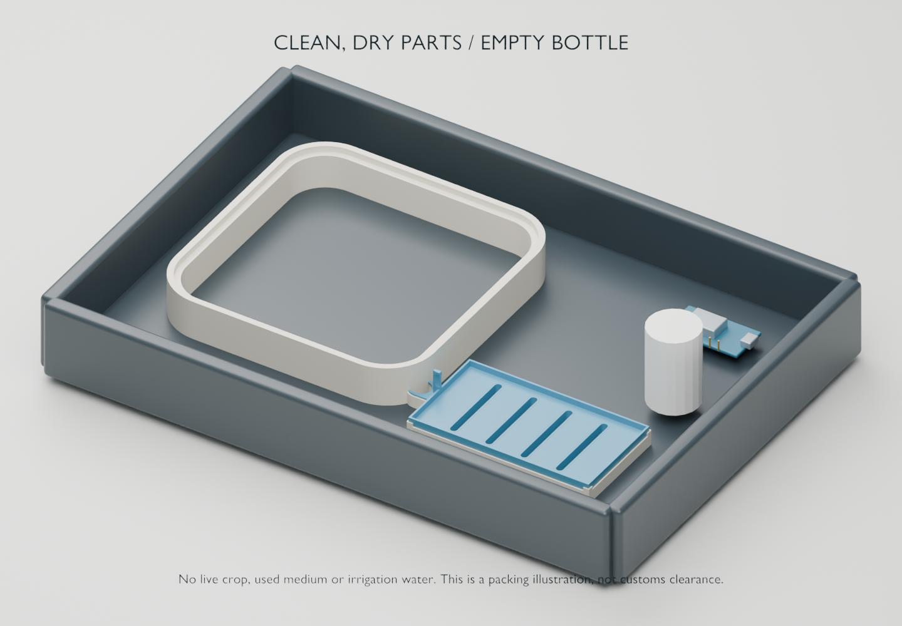

FIELD GUIDE / JAPAN & CARRY-ON
Bring the experiment, not a live crop.
Carry-on only, ANA. Use the New York week for evidence; start a fresh local crop after arrival.

Pack / source / verify
| Category | Plan | Reason |
|---|---|---|
| Printed kits and dry electronics | Clean, dry and protect; keep connections identified. | Remove growing material and water. Protect sensor ends and loose battery terminals. |
| Seed and used paper / soil / plants | NY test stays in the US; buy Japan seed locally. | Japan plant quarantine regulates seeds/plants and prohibits soil. We have not obtained import documents. |
| Bottles | Pack empty. | Refill after arrival; do not carry irrigation water. |
| Pointed soldering iron and hand tools | Borrow / buy in Japan. | ANA explicitly excludes pointed soldering irons and broadly restricts tools in carry-on. |
| Multimeter and pointed probes | Borrow / buy in Japan unless ANA confirms the exact kit. | No explicit ANA classification was found. This is uncertainty, not proof every meter is banned. |
| Anker C300 DC, 288Wh | Destination power equipment; do not pack for this passenger flight. | Exceeds the normal passenger lithium-battery limits. Being owned does not establish motor wiring compatibility. |
| Growing mats | Optional. Use household paper for NY; source locally if needed later. | Current cart delivery Sep 30 misses the NY trial. Exact processed wood-fiber customs treatment was not individually cleared. |
ANA tool restrictions · ANA conditional items / batteries / soldering irons · FAA ordinary dry batteries (including 9V) · MAFF plant quarantine. Recheck the actual itinerary; codeshare and departure-country rules also apply.
Before leaving New York
- Photograph the final crop, water path and any leak/failure. Export the trial notebook.
- Leave an actively growing trial with an informed caretaker, or end it and remove plant material. Do not abandon a filled experimental tray beside electronics.
- Clean and dry prints; record any distortion and snap-fit damage.
- Pack model files, camera images, recipe and calibration notes. Keep data backed up separately.
- Arrange the Japan work surface/cart, seeds, basic tools and suitable electrical supplies. Finish modular-table geometry only after the correct files and reach measurements are available.
First Japan session
Confirm delivered kit contents, power-adapter labels and cable types. Follow the numbered robot assembly guide, then add the dry light-sensor bench. Test cameras, serial devices, supply voltages and wiring continuity before wet operation. Then commission dummy trays and very small supervised pours. A successful NY paper crop proves neither robot reach nor unattended watering.